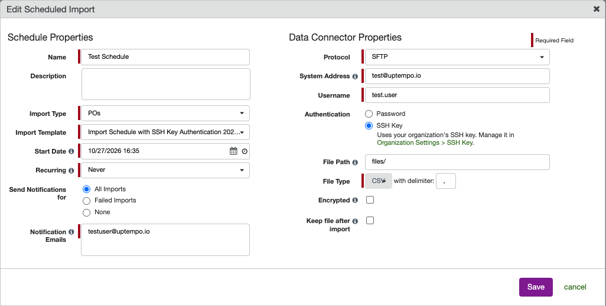
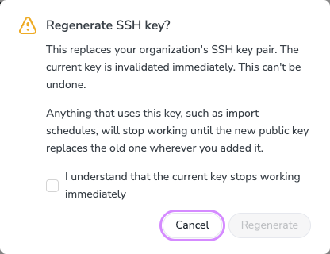
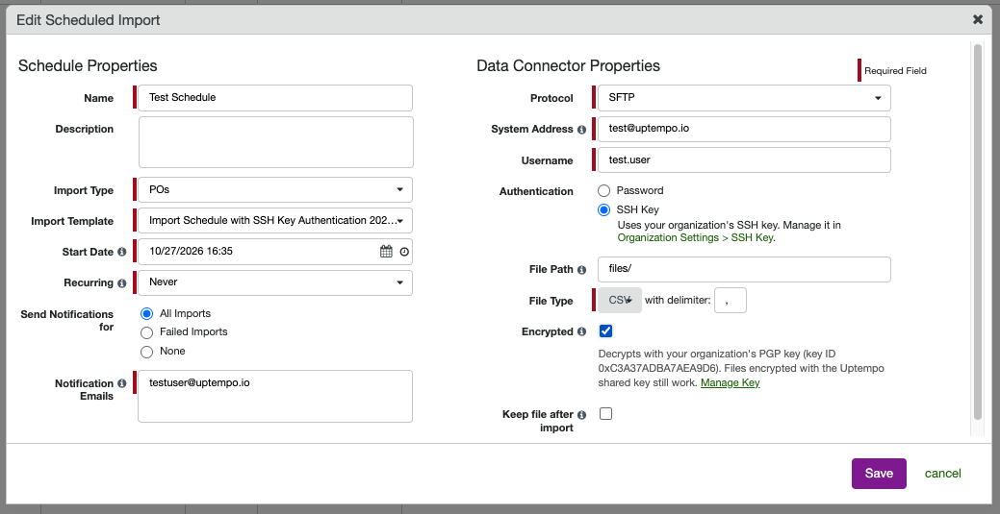
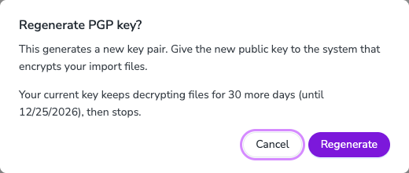

Import data
When you and your team need to process large amounts of data effectively, you can use the import function.
You can create and update investment plans, as well as purchase orders (POs) and actuals, through an import. This process is explained in detail in the following sections:
Over time, you will likely develop a preferred file structure and import settings that optimally support your data management for POs and actuals. To avoid manually entering these settings for every import, you can save them as templates. For more details, see Import templates.
Currencies during import
During an import, amounts are transferred from your file without a specified currency. When setting up your import files, keep the following interpretation rules in mind:
Investment plans: Amounts imported into an investment plan are interpreted in the local currency of that specific plan.
POs and actuals: A central system setting determines whether imported amounts for POs and actuals are interpreted in the local currency of the investment plan or in the master currency.
Mapping rules
When importing, you can use unique and static rules to map imported records to their corresponding investments.
Unique rules
Unique rules directly tie a PO or actual to a specific investment. For example, if each investment has a unique ID number, you can include that ID in your import file. The system then uses that ID to automatically connect the PO/actual record to the correct investment.
You can also use regular expressions (search patterns used to identify a specific sequence of characters within a larger string) to extract a direct identifier.
- Example
Suppose an investment ID is buried at the end of a PO description field, such as ‘Registration for XYZ Event 7658159’. You can use the regular expression
\d{7}to identify and extract that 7-digit number from the description, allowing the system to map it to the associated ID in your investment plan.
Static rules
Static rules are broader and not specific to a single investment. They utilize specific columns in your import file to identify which area of the organization the PO or actual record belongs to.
- Example
If Finance tracks the business unit and region for all spending, those will be distinct columns in your import file. Using static rules, the import process will identify the business unit from the file and connect the PO/actual to that unit within your organizational hierarchy.
Scheduled imports
Your system may be configured with scheduled imports. This means that data from a third-party system is imported automatically on a regular basis, ensuring your PO and actual data remains consistently up to date without manual intervention.
Scheduled imports are managed by administrators. Contact your system administrator if you have any questions about this schedule or if you notice any data irregularities.
Sign in to an SFTP server with an SSH key
Instead of a password, a scheduled import can sign in to your SFTP server with your organization's SSH key. This also works with SFTP servers that only accept key sign-in. Each organization has one Ed25519 key. Uptempo keeps the private key and never shows it. Company admins manage the key in Organization Settings.
Add your organization's SSH key to your SFTP server
Go to Organization Settings > SSH Key. If your organization doesn't have a key yet, generate one first.
Under Public Key, click Copy.
On your SFTP server, add the public key to the authorized keys of the user that you upload your import files with.

Use the SSH key for a scheduled import
In the
 Budgets section, click Import History and Schedules, and then open the Schedules tab. Add a new schedule, or edit an existing one.
Budgets section, click Import History and Schedules, and then open the Schedules tab. Add a new schedule, or edit an existing one.Under Data Connector Properties, set Protocol to SFTP and enter the Username.
Under Authentication, select SSH Key.
Click Save.


The Authentication option is available only for the SFTP protocol. Password is the default, and existing schedules that sign in with a password keep working without any changes. If you switch a schedule to SSH Key, its saved password is removed.
Regenerate the SSH key
Regenerating replaces your organization's SSH key. The current key stops working immediately, and you can't undo this. Scheduled imports that use the SSH key fail until you add the new public key to your SFTP server.
Go to Organization Settings > SSH Key and click Regenerate.
Select I understand that the current key stops working immediately, and then click Regenerate.
Copy the new public key and replace the old one on your SFTP server.


Decrypt import files with your organization's PGP key
If your import files are encrypted, scheduled imports can decrypt them with your organization's own PGP key instead of the Uptempo shared key. Each organization has one RSA 4096 key. Uptempo keeps the private key and never shows it. Company admins manage the key in Organization Settings.
Files encrypted with the Uptempo shared key keep working, so existing schedules don't need any changes.
Share your organization's PGP public key
Go to Organization Settings > Import File Encryption. If your organization doesn't have a key yet, generate one first.
Under Public Key, click Copy, or click Download .asc to save the key as a file.
Give the public key to the system that encrypts your import files.

Decrypt files for a scheduled import
In the
Budgets section, click Import History and Schedules, and then open the Schedules tab. Add a new schedule, or edit an existing one.Select Encrypted. The text below the checkbox shows which key the schedule decrypts with.
Click Save.


If a file was encrypted with a key that is neither your organization's current key nor the Uptempo shared key, the import fails. The schedule event log shows which key the file was encrypted with.
Regenerate the PGP key
Regenerating creates a new key pair. Your current key keeps decrypting files for 30 more days, then stops. The confirmation and the Import File Encryption page show the date it stops.
Go to Organization Settings > Import File Encryption and click Regenerate.
Click Regenerate to confirm.
Give the new public key to the system that encrypts your import files before the 30 days end.

